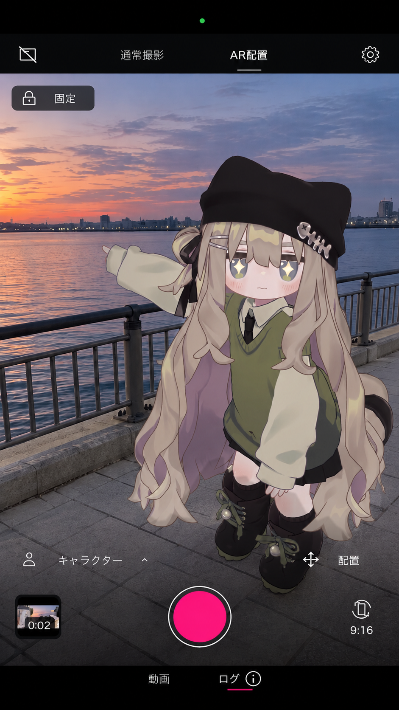
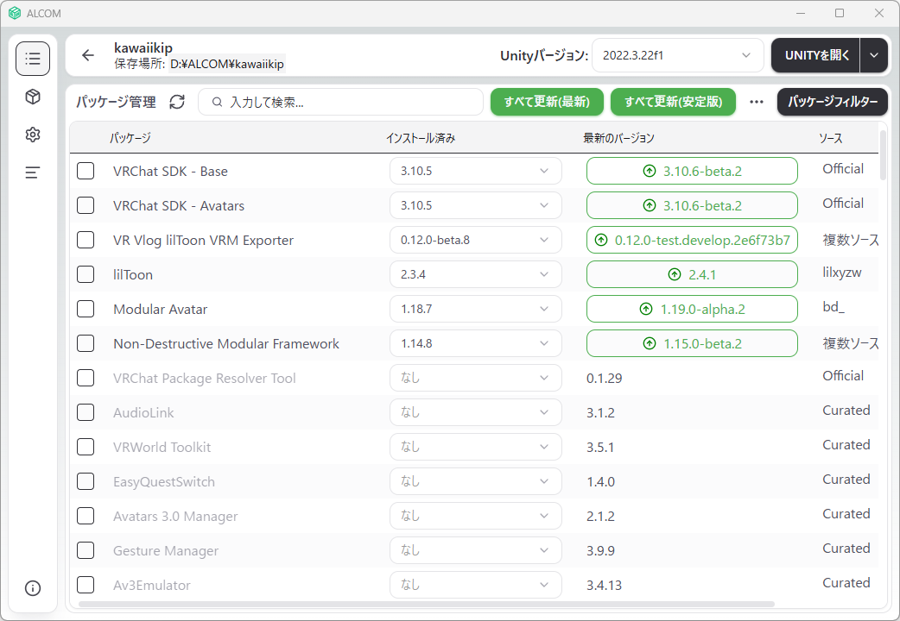
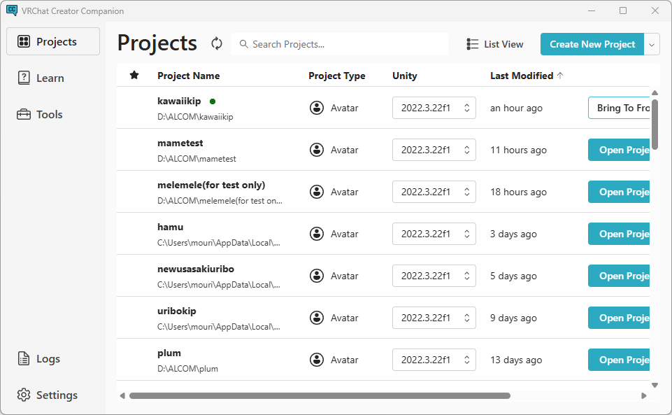

自分のアバターを、VR Vlogへ。
Unityで作ったQRコードをスマホのVR Vlogで読み取り、アバターを受け取ります。
いつものアバターで撮影を始められます。
無料のUnity用ツールです。VCC / ALCOMから導入できます。

はじめに
エクスポーターを入れる
まず配布元を追加し、下の手順でインストールします。
- 配布元を追加
上の追加ボタンからALCOMを開き、「VPMリポジトリを追加」を押します。
- プロジェクトにインストール
プロジェクトの「管理」で、追加したエクスポーターの「インストール済み」欄から最新の正式版を選び、「適用」を押します。
- Unityを開く
アバターを入れたプロジェクトを開いたら、準備完了です。


アバターとlilToonを導入したUnity 2022.3のプロジェクトと、最新のVR Vlogを入れたスマホを用意します。プロジェクトをバックアップし、Unityを閉じてから始めてください。
管理アプリが開かないとき
ALCOMの「パッケージ&テンプレート」→「VPMリポジトリ」→「VPMリポジトリを追加」を開き、次のURLを貼り付けて「VPMリポジトリを追加」を押します。表示された内容を確認し、もう一度「VPMリポジトリを追加」を押します。
インストールできたら
受け取りまで、
3ステップ。

アバターを右クリックし、
「VR Vlog」→「アプリに転送（かんたん）」を選びます。

名前・作者名と利用条件を確認し、
同意が必要な項目にチェックを入れて「QRコードを作る」を押します。

スマホでVR Vlogアプリを開き、カメラをPCのQRコードに向けます。
確認画面で「受け取る」を押したら完了です。
困ったときは
作者のX（@uribou_vrc）へDMでお知らせください。
QRコードはどこで読み取れますか？
スマホ標準のカメラ、またはVR Vlogアプリのカメラで読み取れます。
表情を詳しく設定するには？
Unityで「VR Vlog」→「アプリに転送（通常）」を選びます。
「QRコードを作る」が押せないときは？
転送画面の案内を確認し、名前・作者名の入力や、同意が必要な項目へのチェックを済ませてください。